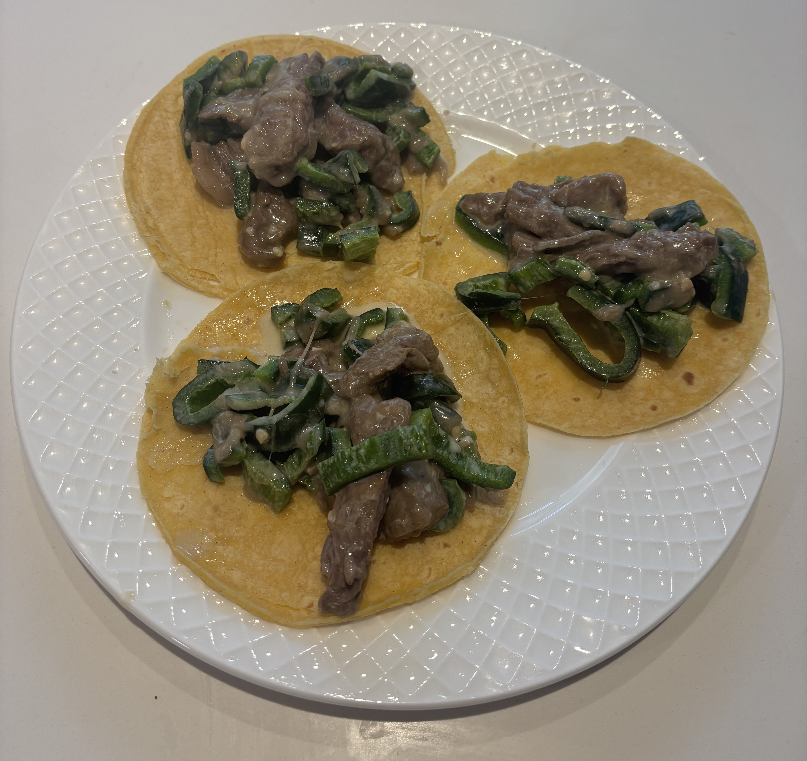

Home
Poblano Steak and Cheese Tacos

Ingredients
- 4 poblano pepper
- 308g Monteray jack
- 1 lb skirt steak cut into strips
- mayo
- lime juice
- chili powder
- garlic powder
- cumin
- salt
Steps
- Cut open a poblano pepper (x4) and insert chunk of cheese inside of it
- Slice the steak into strips and put into a bowl with mayo, lime juice, chili powder, garlic powder, cumin, and a little salt
- Mix together the seasonings and steak until fully covered
- Char the peppers in a cast iron over high heat then remove from heat and chop them into pieces
- Brown the steak in a skillet. Then add the chopped peppers and cheese to the skillet cooking on low to medium heat until the cheese is melty
- Portion out the fillingd and serve with a warm tortilla and top with desired toppings